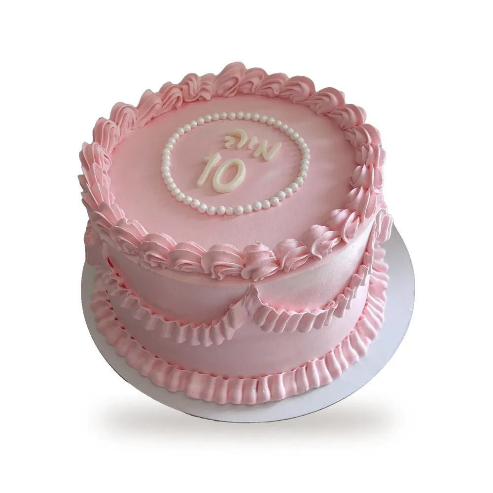
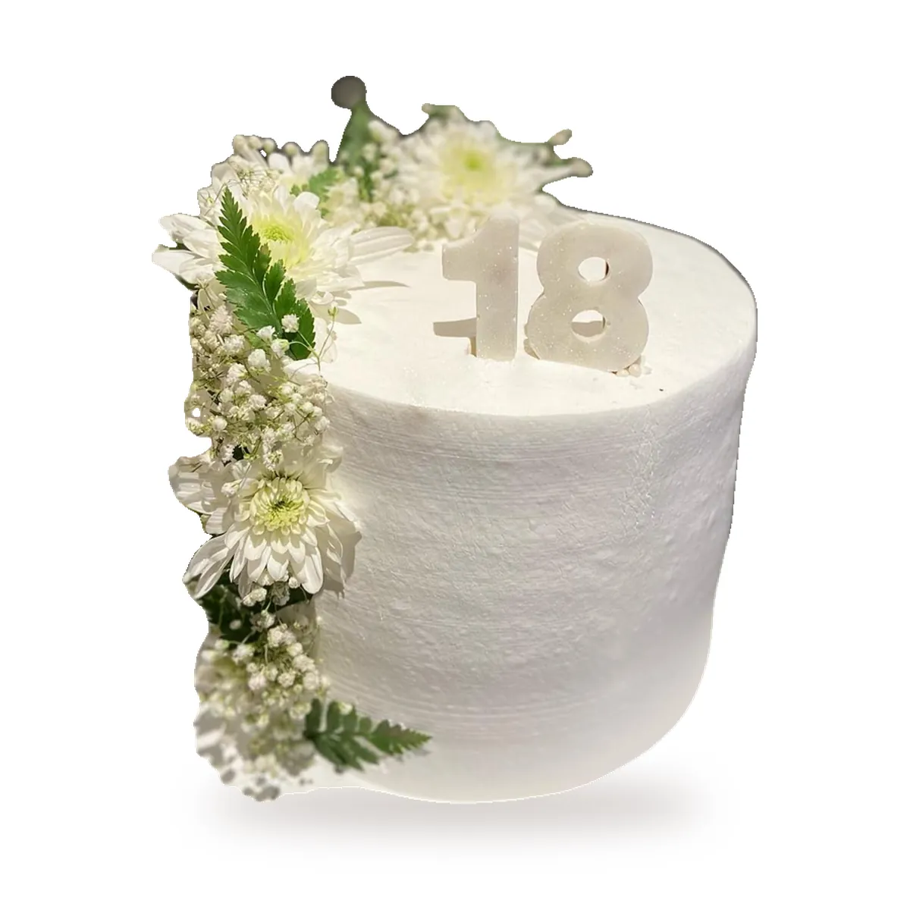

מאת יהלי זיני
ההבדל העיקרי: בשביל מי העוגה
עוגת בנטו היא עוגה אישית: קטנה, בגודל של מתנה, לחגוג איתה לבד או לתת למישהו אחד. עוגה מעוצבת רגילה בנויה לאירוע, כדי שיהיה ממנה לכל האורחים.


השוואה מהירה
| עוגת בנטו | עוגה מעוצבת | |
|---|---|---|
| גודל | אישית, קטנה | לפי כמות האורחים |
| מתאימה | מתנה, חגיגה קטנה, הפתעה | יום הולדת, בר ובת מצווה, אירוע |
| עיצוב | כיתוב קצר ועיצוב עדין | דמויות, קומות, זילופים, פרחים |
| טעמים | וניל או שוקולד, חלבי או פרווה | וניל או שוקולד, מילויים לבחירה, חלבי או פרווה |
מתי לבחור עוגת בנטו
- מתנה לחברה, לבן או בת זוג, למורה או לקולגה.
- יום הולדת בזוגיות או במשפחה קטנה.
- כשרוצים לכל אחד עוגה עם השם שלו, למשל לכמה ילדים.
מתי לבחור עוגה מעוצבת
- מסיבת יום הולדת עם אורחים.
- בר מצווה, בת מצווה או אירוע משפחתי.
- כשרוצים עיצוב גדול: דמויות, קומות או נושא שלם.



אפשר גם שתיהן
הרבה פעמים מזמינים עוגה מעוצבת לאירוע ועוגת בנטו כמתנה קטנה לחוגג או לחוגגת. ואם רוצים לעצב עוגת בנטו בעצמכם, יש סדנת עוגות בנטו.